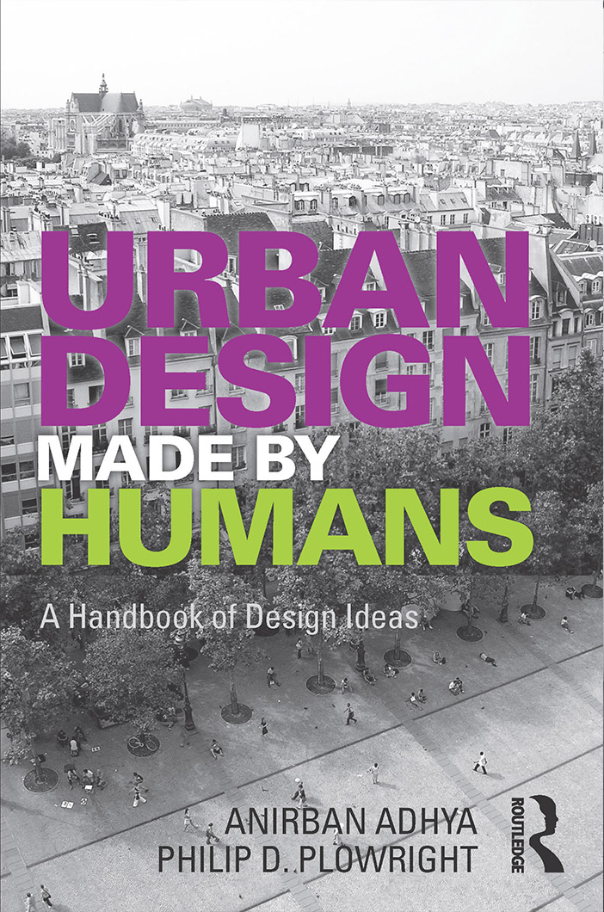
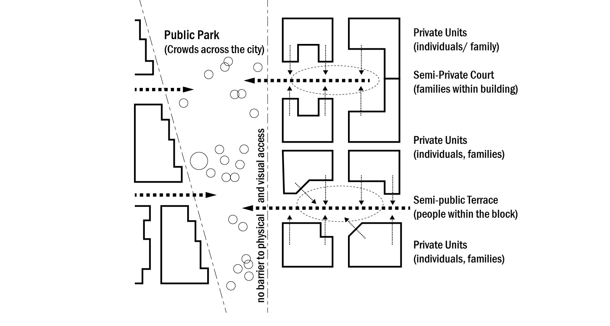
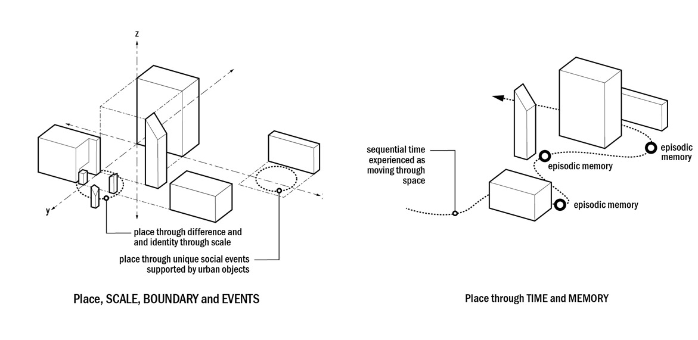

The act of design is not making objects or producing drawings. Design is the thinking process behind those outcomes. This handbook extends the cognitive frameworks of Making Architecture into the urban realm, exploring how we shape our cities through massing, infrastructure, and habitation. We argue that the city is a vast assemblage of social agreements linked by infrastructure. By using the same cognitive tools we use for buildings — such as containment, porosity, and visibility — we can understand how urban form supports human behavior. This book isolates the specific design operations that transform a 'space' (a geographic quantity) into a 'place' (a social quality), focusing on how physical geometry creates the potential for public life.
The fundamental components of the urban environment.
The Syntax. How simple urban concepts link together to form complex social agreements.
A type of repetition that brings regularity. We use patterns to reduce the mental stress of encountering the unknown.
A pattern based on similarity. When things in the city look similar but are not exactly the same (e.g., rooflines, window rhythms), they form a rhyme.
The potential to organise the city into a recognisable pattern. Legibility creates understanding.
When several elements align towards a single objective or focus. Coherence is the result of legibility and makes the city "make sense."
A line of movement facilitating human bodies in space. A projection of intention.
A place of gathering or intersection. Nodes interrupt paths and create the opportunity for choice.
The state of being physically near others. The fundamental requirement for social interaction.
The shared agreement that a space belongs to everyone. It emerges from accessibility, visibility, and co-presence.

A richness of information. Complexity maintains interest but requires order to avoid chaos.
The degree of variation (formal or social) within a unified whole. Diversity allows us to understand relationships through difference.
The ability to have agency. Alternative choices in mobility, use, and density create flexibility.
The ability of an urban system to adapt to change. Resilience is born from the redundancy of choice and diversity.
The void between objects. The medium of relationships.
The distinguishing feature that makes one thing different from another. We often project human personality onto urban character.
The recognition of that character as a specific, named entity.
Space plus Meaning. When a location acquires social value and memory, it becomes a Place.
